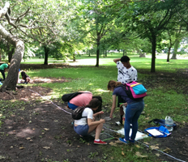
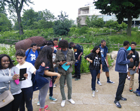

OUR MISSION
Explore nature in the city, learn about college and career paths in natural science fields, and participate in hands-on scientific investigations! Participants in the Teenagers Exploring and Explaining Nature and Science (TEENS) fall program at the Peggy Notebaert Nature Museum study the nature found in our city's parks, neighborhoods, and forest preserves, help with environmental stewardship activities such as habitat restoration and learn environmental science field and laboratory methods. Teens develop their own research questions and learn to use mobile devices to collect data in the field and geographic information systems (GIS) software to create and share dynamic online maps of project data.
1 / 3

2 / 3

3 / 3